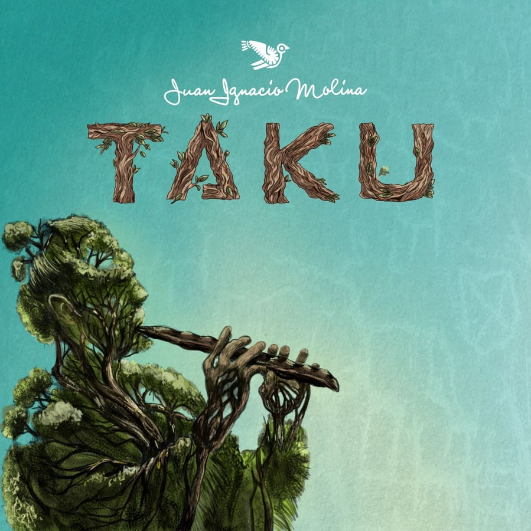
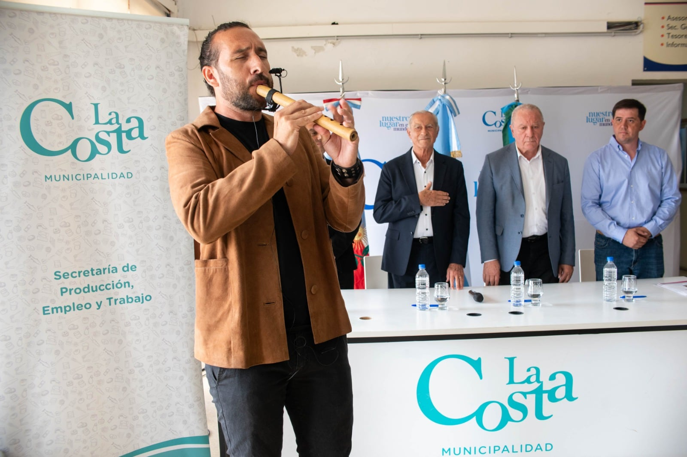

Compositor e intérprete · Catamarca, Argentina
Juan Ignacio Molina
Compositor e intérprete con más de 20 años de experiencia en festivales, teatros y auditorios; músico sesionista, director musical y productor dentro del ámbito artístico nacional.
FestivalesTeatrosAuditoriosEventos culturales
Biografía
Biografía y formación musical.
Nacido en Catamarca en 1987, desde los 7 años Juan Ignacio Molina encontró en los instrumentos aerófonos andinos un lenguaje propio. En 2004 fue invitado por Sergio Galleguillo a una grabación en vivo en La Rioja; en 2006 formó un dúo de flauta y guitarra con David Badja, grabó su primer disco y realizó una gira europea por Eslovenia, Francia, Alemania, Bélgica y España.
Es Licenciado en Flauta y Licenciado en Música Popular por la Universidad Nacional de Cuyo. Fue becado por la UNESP en São Paulo, por el Fondo Nacional de las Artes y por la UNSAM para formarse con el maestro Dino Saluzzi.
El proyecto
Folklore argentino, mundo andino y texturas contemporáneas.
La propuesta musical invita a un viaje por el altiplano catamarqueño: clásicos de la música argentina, nuevas versiones de danzas nativas, composiciones propias y una sonoridad potente que integra flautas, vientos originarios, voz y arreglos escénicos.
En vivo, el proyecto puede desplegarse con músicos, asistencia técnica, sonido, iluminación y proyección visual, construyendo una experiencia de escenario inmersiva y profesional.
Escuchá su música
Antes de contratar, dejá que la obra hable.
Una propuesta atravesada por flautas, aerófonos andinos, folklore argentino y nuevas texturas. Material disponible para escuchar y compartir con programadores, productores y equipos culturales.

Álbum TAKU Juan Ignacio MolinaFormatos de presentación
Opciones claras para cada escenario.
Formato solista
Presentación íntima con flauta, aerófonos andinos, guitarra/charango y voz. Ideal para ciclos culturales, auditorios y eventos especiales.
Dúo o ensamble reducido
Mayor riqueza armónica y rítmica, manteniendo una puesta flexible para teatros, salas y programaciones culturales.
Banda completa
Experiencia escénica potente con músicos acompañantes, pensada para festivales, escenarios grandes y eventos con alta convocatoria.
Puesta integral
Equipo artístico-técnico con sonido, iluminación, visuales, asistentes y coordinación para propuestas institucionales o festivales.
Ideal para programadores
Una propuesta lista para escenarios culturales.
Festivales
Formato adaptable para escenarios populares, fiestas provinciales y programaciones con identidad argentina y latinoamericana.
Teatros y auditorios
Concierto cuidado, sensible y profesional para salas donde importan la escucha, la narrativa y la presencia escénica.
Eventos institucionales
Propuesta sólida para gobiernos, universidades, embajadas, organismos culturales y celebraciones con raíz territorial.
Ciclos culturales
Presentación flexible para espacios independientes, museos, centros culturales y encuentros de música de raíz.
Ficha de contratación
Qué incluye la presentación.
Una ficha clara para que productores y equipos técnicos entiendan rápido el alcance de la propuesta antes de consultar disponibilidad.
Pedir ficha completa
FlautaAerófonos andinosCharangoGuitarraVozDirección musicalProducción escénica
FlautaAerófonos andinosCharangoGuitarraVozDirección musicalProducción escénica
Quenas profesionales
Instrumentos fabricados y seleccionados por Juan Ignacio Molina.
Un espacio pensado para músicos, estudiantes avanzados y amantes de los vientos andinos que buscan una quena confiable, afinada y lista para escenario o estudio.
Cada instrumento puede ser revisado bajo criterio musical profesional: afinación, respuesta, comodidad, timbre y terminación.
Versión Bamboo
Sonoridad noble, liviana y expresiva para estudio, ensayo y escenario.
Versión Madera
Mayor cuerpo tímbrico y presencia para intérpretes que buscan carácter.
Selección Pro
Instrumentos revisados por afinación, respuesta y comodidad interpretativa.
Agenda
Conciertos y próximas presentaciones.
Próximamente
Fechas disponibles para programadores y productores culturales.
Este espacio puede actualizarse con conciertos vigentes, próximas presentaciones, festivales, ciclos culturales y actividades especiales.
Consultar agendaGalería
Escenario, identidad y presencia artística.

Trayectoria
Formación, escenarios y reconocimientos.
Premio Estímulo · Mención Especial
Reconocimiento artístico en Catamarca.
Invitación de Sergio Galleguillo
Grabación en vivo con Los Amigos en La Rioja.
Dúo flauta y guitarra
Primer disco y gira europea por Eslovenia, Francia, Alemania, Bélgica y España.
UNCuyo + UNESP
Licenciaturas en Flauta y Música Popular; beca de formación musical en São Paulo, Brasil.
Consagración Fiesta Nacional del Poncho
Reconocimiento central en la escena cultural catamarqueña.
Dirección musical en Cosquín
Dirección y producción musical de la delegación oficial de Catamarca.
Disco solista “Sólo”
Folklore y música andina de Catamarca en formato solista.
Beca UNSAM · Dino Saluzzi
Formación musical con uno de los grandes maestros argentinos.
Capacidades artísticas
Un músico integral para escenarios exigentes.
Interpretación
Flauta, aerófonos andinos, charango, guitarra y voz.
Composición
Obra propia inspirada en Laguna Blanca, la infancia y la raíz andina.
Dirección musical
Coordinación artística, producción, logística y puesta en escena.
Formato escénico
Presentaciones con músicos, asistentes, sonido, iluminación y visuales.
Prensa y validación
Credenciales claras para decidir la contratación.
Cuando estén disponibles, este bloque puede sumar links de prensa, videos oficiales, Spotify y notas periodísticas.
Contratación 2026
Festivales, teatros, auditorios y eventos institucionales.
Escribir por WhatsApp
Contrataciones · festivales · teatros · auditorios
Contrataciones y presentaciones artísticas.
Formato solista o presentación ampliada con equipo artístico-técnico. Ideal para festivales, ciclos culturales, teatros, eventos institucionales y propuestas de música argentina/latinoamericana.